Green hydrogen is rapidly emerging as a transformative force in the global energy storage landscape, offering unprecedented opportunities to overcome the intermittency challenges of renewable energy sources. With the global market projected to grow from USD 5.20 billion in 2025 to USD 28.89 billion by 2030 at a remarkable CAGR of 40.42%, green hydrogen represents one of the fastest-growing segments in the clean energy transition.
Government initiatives worldwide, particularly in the United States with its USD 7 billion Regional Clean Hydrogen Hubs program, are accelerating adoption and innovation in storage technologies ranging from salt caverns to integrated microgrid solutions. As industries seek to decarbonize and energy security concerns mount, green hydrogen's versatility as both a long-duration storage medium and clean fuel is positioning it as a cornerstone of future energy systems, capable of bridging seasonal gaps in renewable energy production while supporting grid stability and resilience.
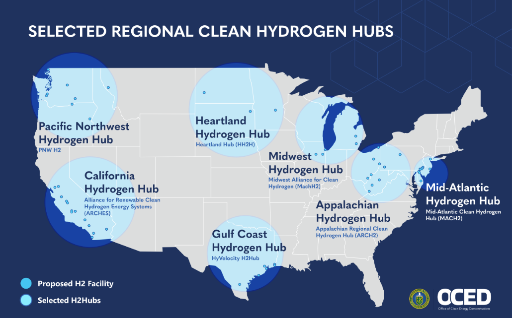
Green Hydrogen: Fundamentals and Significance in Energy Storage
Green hydrogen represents a critical evolution in energy storage technology, distinguished by its production method using renewable electricity to split water through electrolysis, resulting in zero-carbon emissions. Unlike its gray or blue counterparts produced from natural gas, green hydrogen offers a genuinely clean energy carrier that can be stored for extended periods without degradation, making it uniquely suited for long-duration and seasonal energy storage applications. This characteristic addresses one of the fundamental challenges in renewable energy systems: the temporal mismatch between energy production and demand.
The significance of green hydrogen in the energy storage landscape stems from its ability to complement other storage technologies while offering distinct advantages. Battery storage excels at short-duration applications but faces limitations in terms of self-discharge and capacity. Green hydrogen, conversely, can be stored for months or even years without significant losses, enabling the capture of excess renewable energy during high-production periods for use during low-production seasons or unexpected demand spikes.
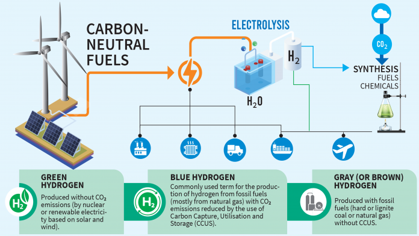
Furthermore, green hydrogen's versatility as both an energy carrier and industrial feedstock creates synergies across multiple sectors. When renewable energy production exceeds immediate demand, the surplus electricity can power electrolyzers to produce hydrogen rather than being curtailed, effectively transforming potential waste into valuable stored energy. This capability becomes increasingly valuable as renewable penetration grows in electricity grids worldwide, creating more frequent instances of excess production.
The chemical properties of hydrogen also make it an excellent medium for transporting energy across distances, effectively serving as a means to move renewable energy from production-rich areas to consumption centers. This characteristic further enhances its utility in comprehensive energy storage strategies that must account for both temporal and spatial disparities in energy landscapes.
Market Trends and Government Initiatives Accelerating Adoption
The green hydrogen market is experiencing explosive growth, with projections indicating an expansion from USD 3.76 billion in 2024 to USD 28.89 billion by 2030, representing a compound annual growth rate of 40.42%. This remarkable trajectory reflects the increasing recognition of green hydrogen's pivotal role in achieving global decarbonization goals and enhancing energy security across diverse economic sectors.
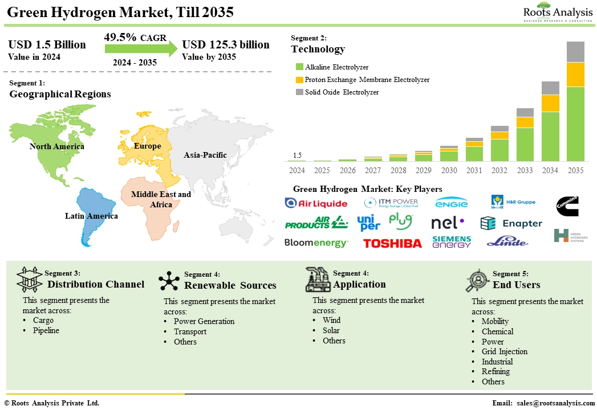
Government initiatives have emerged as powerful catalysts for market development. In the United States, the U.S. Department of Energy (DOE) allocation of over $9.5 billion in federal funding toward clean hydrogen market formation represents one of the most significant public investments in this technology. The Appalachian Regional Clean Hydrogen Hub , with its $7 billion commitment, seeks to establish interconnected hydrogen production, storage, and utilization networks across the country, creating economies of scale that can drive down costs while building essential infrastructure.
Strategic Corporate Investments and Partnerships
Beyond government initiatives, corporate engagement in the green hydrogen sector has intensified substantially. Major energy corporations, industrial conglomerates, and technology providers are forming strategic alliances to advance hydrogen storage solutions. Notable examples include the collaboration between Chevron and Mitsubishi Power Americas on the ACES Delta project in Utah, which aims to store approximately 300 gigawatt-hours of green hydrogen in salt caverns, demonstrating the scale at which private enterprises are engaging with this technology.
Storage Technologies and Pioneering Case Studies
ACES Delta (Advanced Clean Energy Storage) Utah, USA: It involves coupling a 220 MW alkaline electrolysis plant with two purpose-built salt caverns, each capable of storing 5,500 metric tonnes of hydrogen, providing over 300 GWh of dispatchable energy storage capacity. This groundbreaking initiative, backed by industry leaders Chevron and Mitsubishi Power Americas, aims to store up to 300 gigawatt-hours of green hydrogen in two enormous salt caverns.
FH2R (Fukushima Hydrogen Energy Research Field) (Fukushima, Japan): Completed in March 2020, FH2R was, at the time, the worlds largest-class green hydrogen facility, featuring a 10 MW electrolyzer powered by an adjacent 20 MW solar farm and grid electricity. It can produce up to 1,200 Nm³ of hydrogen per hour (approx. 200 tonnes/year).
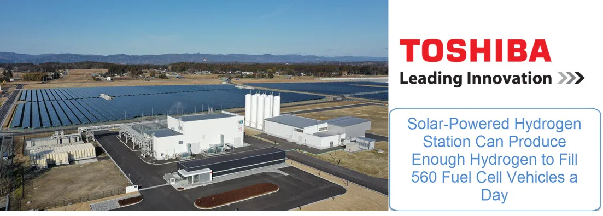
REFHYNE I amp; II (Wesseling, Germany): The REFHYNE consortium, supported by the EUs Clean Hydrogen Partnership, installed and operated Europe's first 10 MW PEM electrolyzer (REFHYNE I) at Shell Rheinland refinery from 2021 to its conclusion in June 2024. Expected to be operational in 2027, REFHYNE II aims to produce up to 15,000 tonnes of green hydrogen annually to help decarbonize refinery operations and potentially supply external industrial customers.
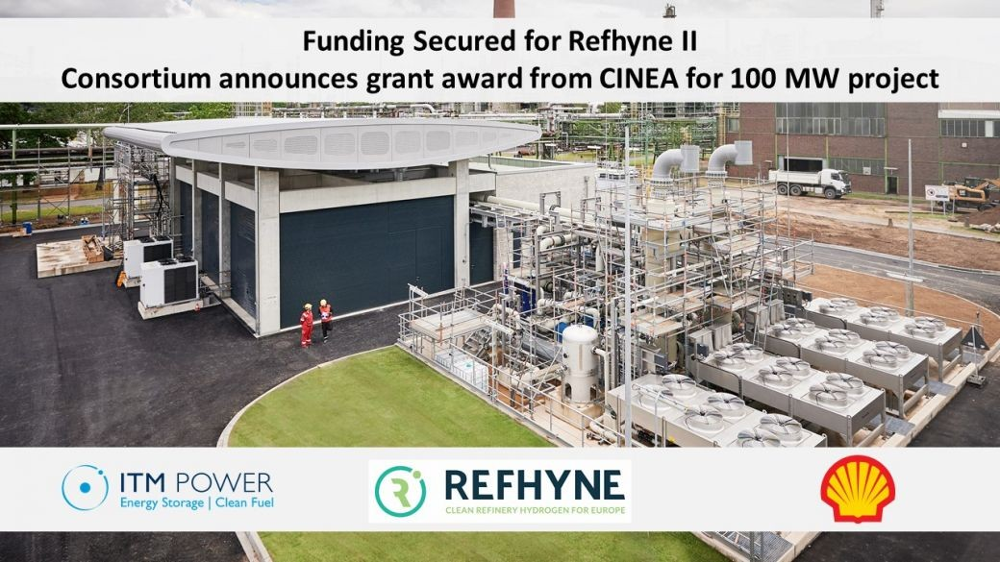
H2FUTURE - Hydrogen Future as a Climate Change Solution (Linz, Austria): This project, completed around 2021, involved installing a 6 MW PEM electrolyzer from Siemens at the voestalpine steel manufacturing site. Coordinated by VERBUND , its main goals were to produce green hydrogen for use in steelmaking processes (potentially displacing fossil fuels) and to demonstrate the electrolyzers capability to provide grid balancing services to the Austrian power grid.
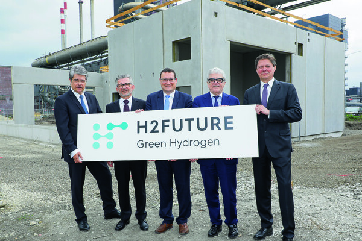
HyBalance (Hobro, Denmark): Operational since around 2018, HyBalance features a 1.2 MW PEM electrolyzer. This project was designed specifically to demonstrate the concept of multi-sectoral hydrogen use coupled with grid balancing. It serves as an early, integrated example of a local Hydrogen Valley concept.
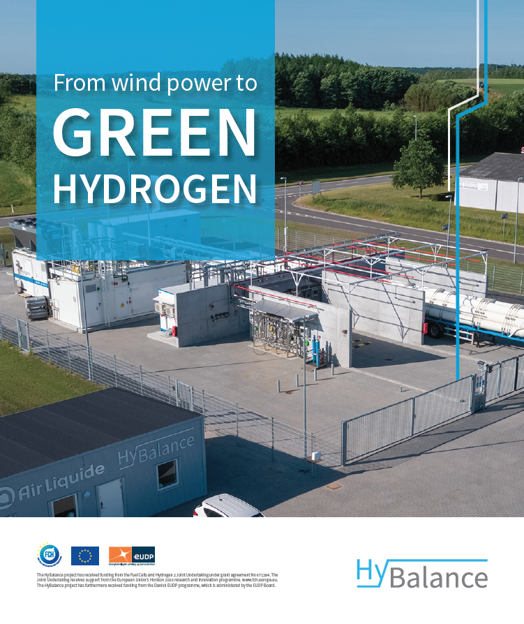
H2U - the Hydrogen Utility® Eyre Peninsula Gateway (South Australia, Australia): This project aims to establish a large-scale green hydrogen and ammonia production facility for both domestic use and export. The initial Demonstrator Stage involves a $240 million investment for a 75 MW electrolysis plant capable of producing up to 10,000 tonnes of hydrogen per year, feeding a 40,000 tonnes/year green ammonia facility.
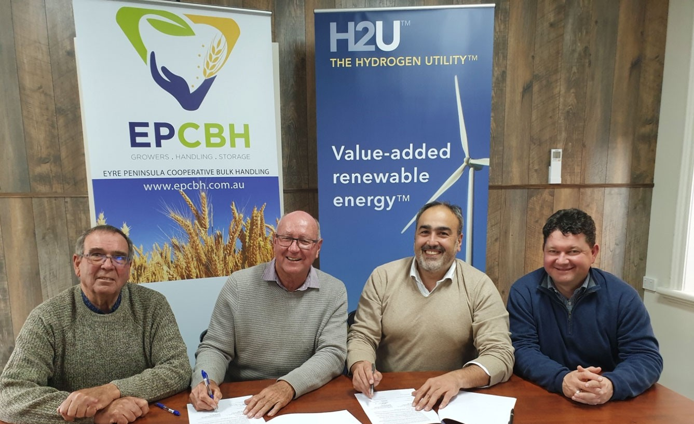
Integration with Renewable Energy Systems: Addressing Intermittency
The integration of green hydrogen production and storage with renewable energy sources represents one of the most promising solutions to the fundamental challenge of intermittency in solar and wind power generation. When renewable output exceeds grid demand, this excess electricity—which would otherwise be curtailed—can be channeled to electrolyzers for hydrogen production, effectively converting temporal electricity surplus into stored chemical energy.
Grid stabilization represents another critical function of integrated hydrogen systems. As variable renewable energy penetration increases, maintaining frequency stability and voltage control becomes more challenging.
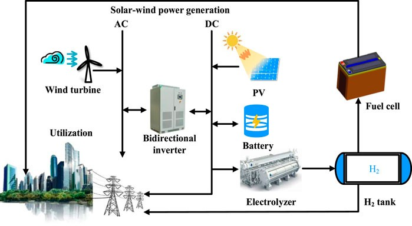
Microgrids and Localized Integration Strategies
At smaller scales, the integration of hydrogen technologies within microgrids offers communities and industrial facilities enhanced energy resilience and autonomy. These localized systems combine renewable generation, hydrogen production, storage, and reconversion to create self-sufficient energy ecosystems that can operate independently from the main grid when necessary.
Companies like BANPU Public Company Limited are pioneering the development of such integrated microgrids, providing communities with the ability to generate and store clean energy tailored to their specific demands and sustainability objectives.
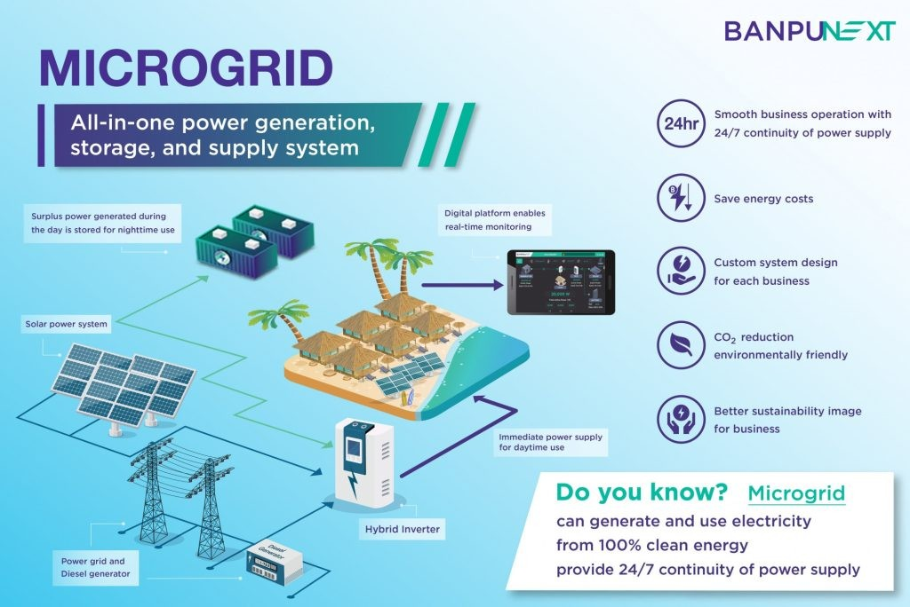
In California, Energy Vault is deploying a combined battery storage and green hydrogen project that leverages the complementary characteristics of both technologies. Similarly, projects in Germany led by companies like LEAG and BASF are pioneering innovative approaches to renewable energy integration with hydrogen, establishing models that can be adapted and replicated in various contexts globally.
Challenges and Pathways to Widespread Implementation
High Production Cost: The levelized cost of hydrogen from renewable electrolysis typically ranges from $3-8 per kilogram, substantially higher than the $1-2 per kilogram for gray hydrogen derived from natural gas without carbon capture.
Infrastructure Gaps: The transition to a hydrogen-inclusive energy system necessitates substantial investments in production facilities, storage infrastructure, transportation networks, and end-use technologies.
Energy Losses: The full hydrogen cycle (electricity → hydrogen → electricity) has efficiency losses of over 50%.
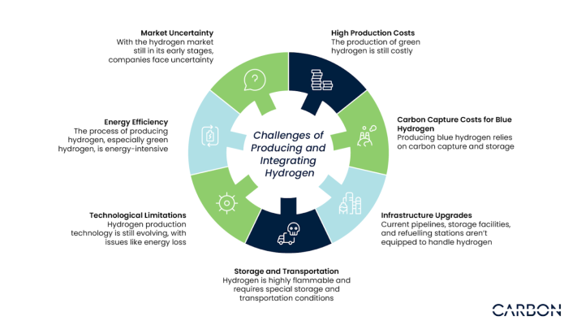
Despite these challenges, the pathway to implementation continues to strengthen. Pilot projects demonstrating integrated hydrogen solutions are proliferating globally, providing valuable operational data and practical experience.
Cost reduction trends remain encouraging, with electrolysis costs declining by approximately 60% over the past decade and projected to fall another 40-60% by 2030 as manufacturing scales and technologies mature. These positive indicators suggest that while obstacles remain significant, they are not insurmountable given sustained commitment from key stakeholders.
Conclusion
The integration of green hydrogen into the energy storage landscape represents a transformative development in the global transition toward sustainable energy systems. As renewable energy sources continue to displace fossil fuels in electricity generation, the need for flexible, scalable, and long-duration storage solutions becomes increasingly acute. Green hydrogen uniquely addresses this need through its versatility, storage longevity, and cross-sectoral applicability, positioning it as a cornerstone technology for comprehensive decarbonization strategies.